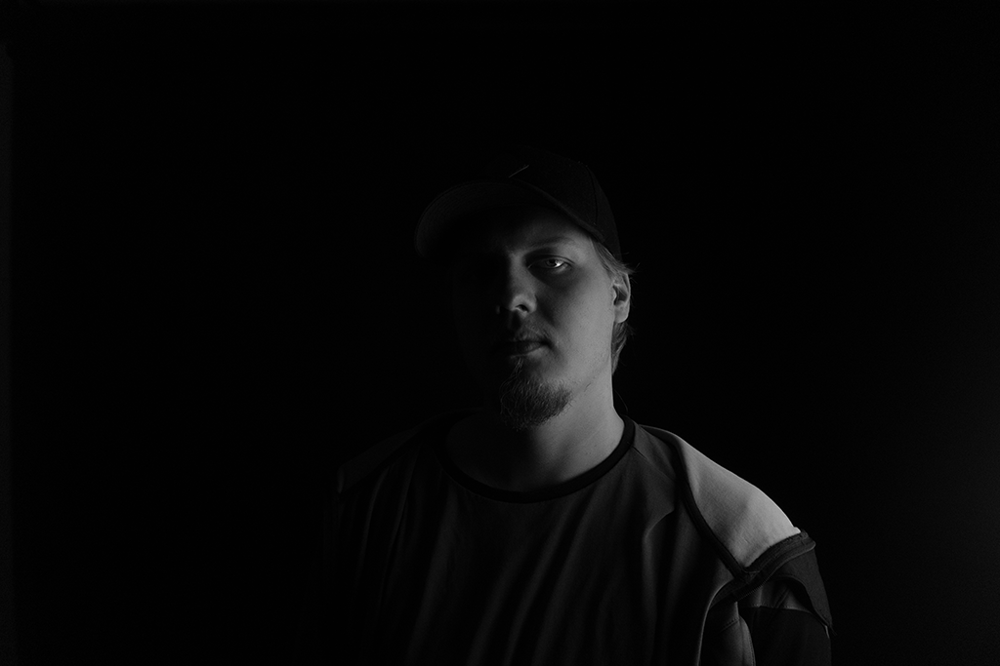
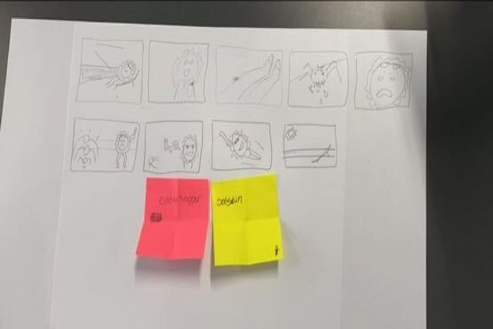

Her ses en animeret illustration af maleriet "Stjernenatten" af Van Gogh. Jeg har brugt programmerne Adobe Photoshop og Animate til at animere dette billede, så månen bevæger sig henover skærmen. Jeg syntes at processen i at bringe et dødt objekt til live igennem animation, er en interresant process. Jeg mener det kan bringe ny opmærksomhed til ting, som ellers vil blive set som trivielle eller kedelige.

Denne animation er lavet i programmet Adobe Animate. Dette var en af de første animationer jeg lavede på mit studie og jeg syntes processen var meget lærerig. Jeg kan se mig selv arbejde mere med Animate i fremtiden, da det er et program med mange forskellige muligheder. Formålet med animationen var, at lege med ”mase og strække” princippet.
Dette billede er et forsøg på, at lave et såkaldt Low-key billede af mig selv. Det er blevet skabt i et lokale, hvor jeg havde fuld kontrol over lyset og derved kunne jeg opnå den ønskede effekt, med at det kun er den ene side af mit ansigt der bliver lyst op. Det giver en form for dyster stemning, hvilket også var målet med mit billede. Dette gjorde jeg fordi jeg søgte noget udover et sædvanligt portrætfoto. Redigeringen af billedet er gjort ved at ligge et sort/hvid filter på det oprindelige billede. Dette blev gjort i Lightroom.

Dette billede er det samme som overnævnte. Denne version er blevet redigeret i Photoshop. Jeg er opmærksom på, at det på mindre devices kan være svært at se forskellen på de to billeder, da de ændringer der er ikke er markante. Idéen ved dette billede var at gøre billedet så pænt som muligt, derfor var mit fokus at rette i det små skønhedsfejl som uren hud og lignende. Det var meget interessant at dykke ned i Photoshop, og se de mange forskellige ting programmet kan benyttes til.

Jeg har som oftest den samme tankegang/forberedelse til de projekter eller opgaver, jeg går ind til. Ofte laver jeg en brainstorm, så jeg kan få alle mine idéer på bordet, hvor jeg derefter kan danne mig et overblik og i sidste ende beslutte mig for hvilken idé, jeg vil gå videre med. Forberedelsesfasen er forskelligt anhængig af hvad opgaven er. Hvis det er en animation, film eller lignende laver jeg oftest et storyboard som set på billedet her. Denne måde at gøre det på give nogle klare retningslinjer, dog følger jeg ikke altid disse retningslinjer helt, da der efter min mening ofte kommer positive resultater ud af at lade kreativiteten og fantasien overtage styringen i en kort stund og i den forbindelse prøve nogle forskellige ting af. Dette storyboard som ses på billedet, hører til et stopmotion projekt, jeg lavede i en gruppe. I denne opgave var jeg med til at træffe alle beslutninger og føre dem til livs, i form af at lave storyboaded, finde lyde og lave samt opsætte figurerne til filmen.
>VIDEOLINK<Denne animation er en form for gif, der viser illusionen af en uendelig mængde biler, og som ville kunne bruges, som en form for pause animation eller lignende.